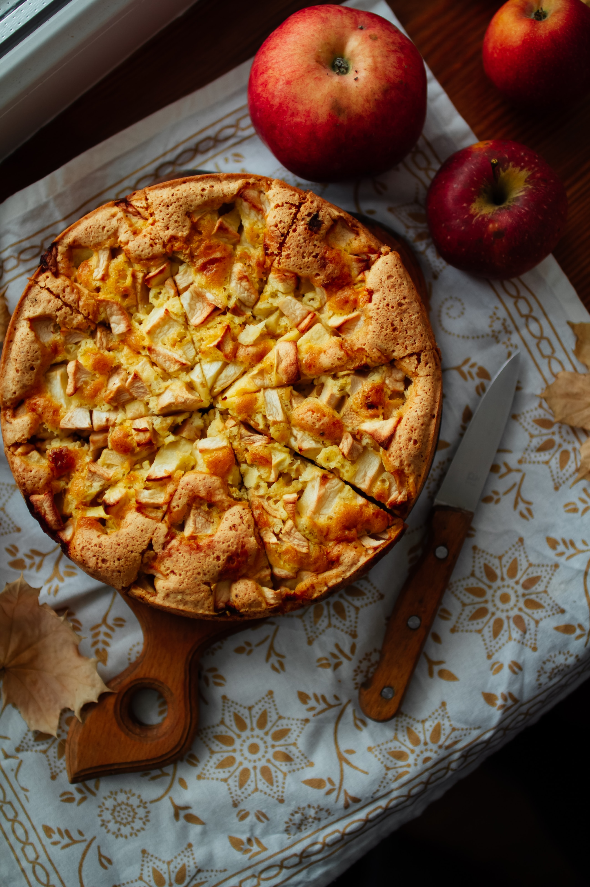

Apple Pie

Description
This is the recipe for my favorite apple pie. It's very easy and unassuming, so tasty it dissapears within one evening, even if shared only with two people.
My husband loves it so much that he wanted to have this simple pie as his birthday cake. Try it for yourself and see if you'll fall in love with it as much as we did!
Ingridients
- 3/4 glass of flour
- 3/4 baking soda
- pinch of salt
- 4 big apples
- 2 big eggs
- 2/3 glass of fine sugar
- 1 teaspoon of vanilla extract
- 115g of butter, melted and cooled
All Ingridients should be room-temperature. Sieve through and mix flour, salt and baking soda. Set aside.
Steps
- Peel and thickly dice the apples.
- Add eggs and sugar into a mixing bowl. Whisk and mix briefly until mixed with a little bit of foam.
- Add vanilla extract and mix briefly.
- Add melted butter, previously prepared dry ingridients and mix delicatly with a spatula.
- Add diced apples and make surte they are well covered in batter.
- Pour batter with apples to a baking form.
- Put in the oven in 175 deg. C for 45-50 minutes.
- Serve warm with vanilla ice cream or wait for the pie to cool down.